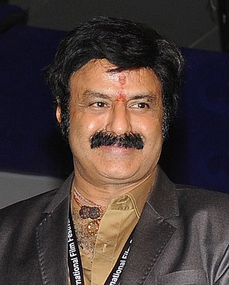
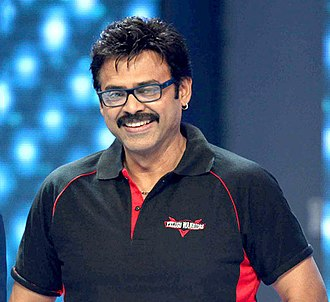

Konidela Pawan Kalyan (born Konidela Kalyan Babu; 2 September 1968 or 1971[n 1]) is an Indian actor, politician, filmmaker, martial artist, and philanthropist who primarily works in Telugu cinema.

Konidela Chiranjeevi (born Konidela Sivasankara Varaprasad; 22 August 1955) is an Indian actor, film producer and former politician. He is regarded as one of the most successful and influential actors in the history of Indian cinema.

Konidela Ram Charan[1][2] (born 27 March 1985) is an Indian actor, producer, and entrepreneur who primarily works in Telugu films

Allu Arjun (born 8 April 1982) is an Indian actor known for his works mainly in Telugu cinema. One of the highest paid actors in India,[3] Allu Arjun is also known for his dancing skills

Nandamuri Balakrishna (born 10 June 1960), widely known as Balakrishna and Balayya is an Indian actor, producer and politician known for his works in Telugu cinema.
Daggubati Venkatesh (born 13 December 1960), also known as Victory Venkatesh, is an Indian actor and producer known for his work predominantly in Telugu cinema and a few Hindi films.
